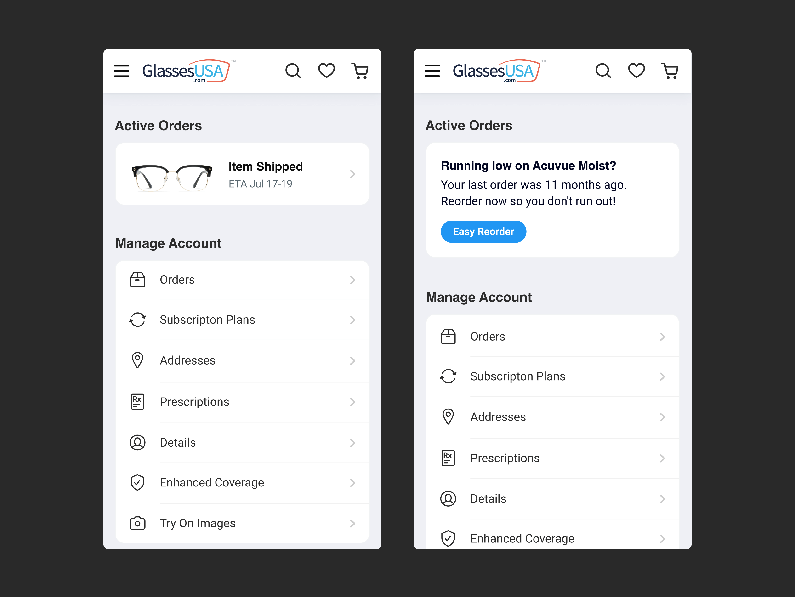
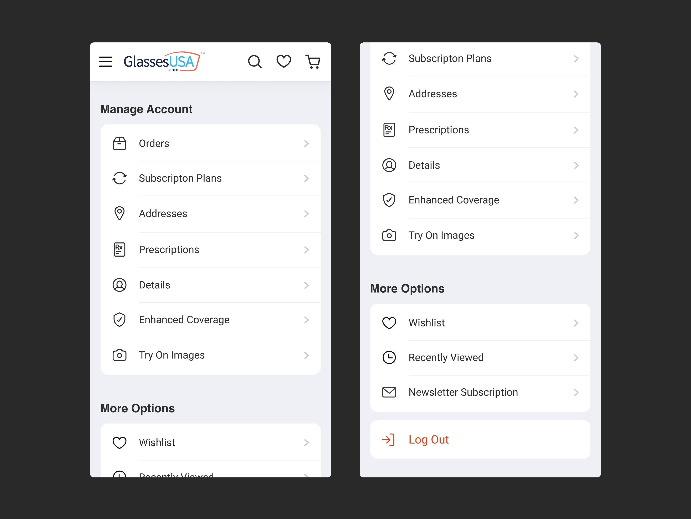
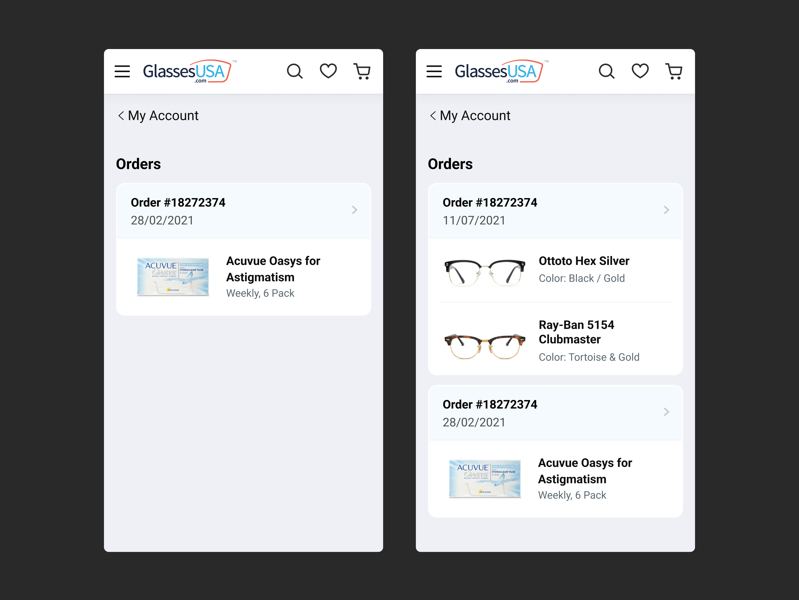
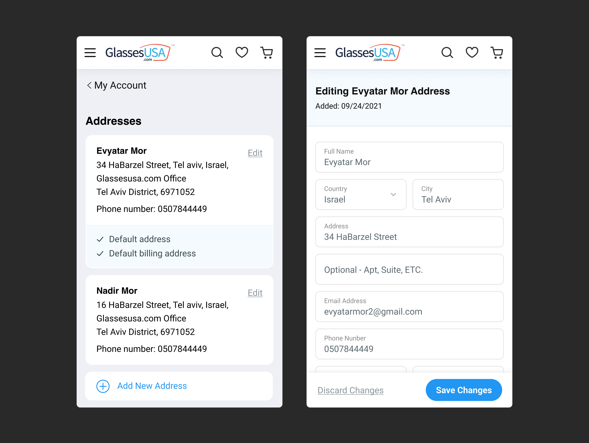
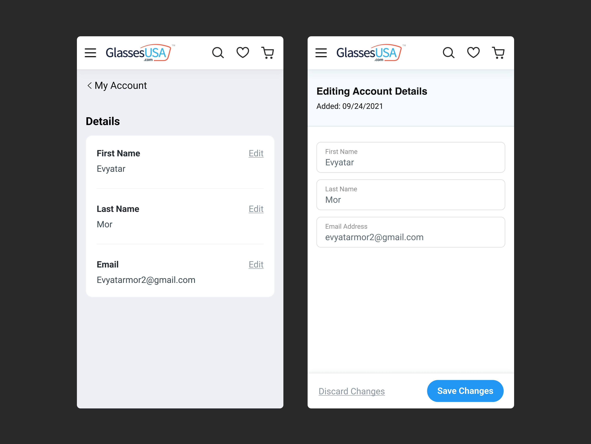
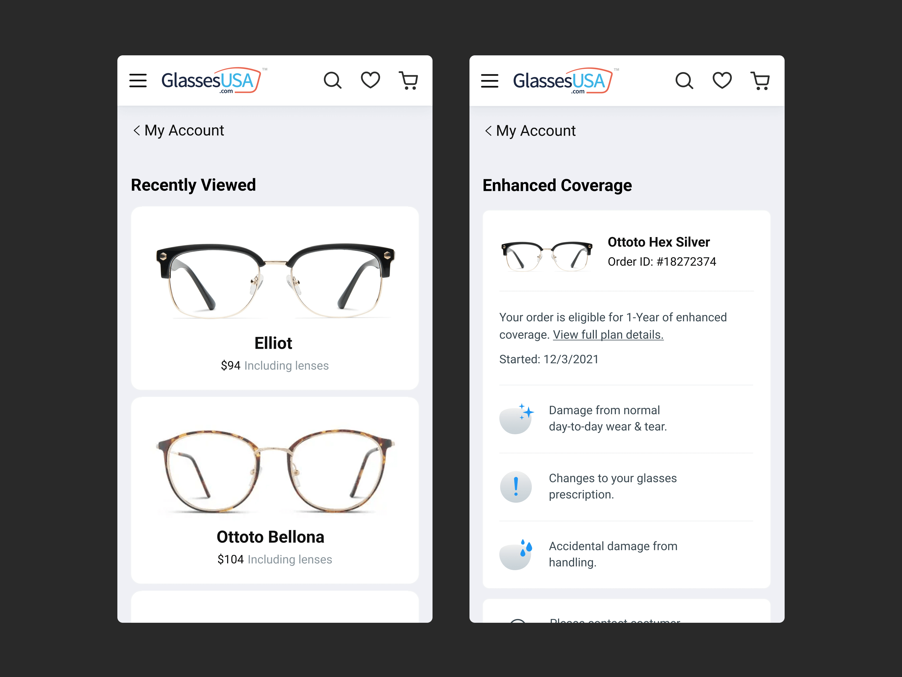

Overview
GlassesUSA.com is an online glasses and contact lenses retailer, with over 3,000,000 monthly users.
“My Account” is a place on the website where you can control and view personal information, get updates, manage subscription plans and find help and other useful information.
“My Account” is an integral part of the product’s experience and has a significant influence on the whole user shopping experience. This is often a main factor in whether the user will return in the future.
GlassesUSA’s “My Account” was previously in a horrendous state - missing key features, an unsightly UI, and a bad experience overall, both on desktop and mobile devices. Because of that, it was deemed necessary to design the mobile version from scratch, and not base it on the current version.

Screenshots of old my account
How I worked
The whole project was handled by me. I worked with a Product Manager who gave me full control over decisions and executions. The work on the project included UX Research, Wireframing, Prototyping and Interface design. The whole process was done by following the method of “Design Thinking”.

Empathize and define
According to the “Design Thinking” methodology, I’ve started with the first stage - Emphasise. In order to do that I’ve done a few steps: · Talked with the customer support team and checked customer support data from calls, chats and emails. · Checked old “My Account” mobile and desktop data. · Made observations on users using the old “My Account”. · Talked with multiple users and asked for reviews and opinions. · Ran “usability tests”. · Done thorough competitor analysis. Afterwards I’ve started working on the second stage - “Defining”. I’ve analyzed the information from the first stage and came up with guidelines that served as the base for the whole project.

Dynamic cards
The “Ideate” stage included drawing a conclusive plan to fix and improve the points mentioned before. One of the ideas I came up with was implementing “Dynamic Cards” - displaying at the top of the “My Account” the most relevant information for the user. Works like magic, similar to “Siri Suggestions” on iOS, primarily focusing on important, relevant and urgent information, or mostly used options. Most of the users access “My Account” in order to view information about an active order, therefore I placed an informative “Dynamic Card” when an order is active, containing order status and updates at the very top. Another example, a user who bought glasses and is missing prescriptions, thus preventing the creation of the item, will receive a “dynamic card” reminding him to upload a valid prescription. Other instances include payment issues, expiring prescriptions, reordering contacts etc.

Example of some dynamic cards
Finding missing revenue opportunities
While working on the project I came across opportunities where certain features could be implemented which could increase potential revenue and carried those through. For example, providing an option to extend the frame protection plan as it’s about to expire, and recommending an option to do an online paid eye exam when a prescription is outdated.

Double your coverage plan
Final Design
Bla bla
Dynamic cards
Main page
The orders section

Order info

Contacts Subscription
The addresses section

The prescriptions section
Account details
The recently viewed section & enhanced coverage section

Skeletons

Empty states

Dialogs